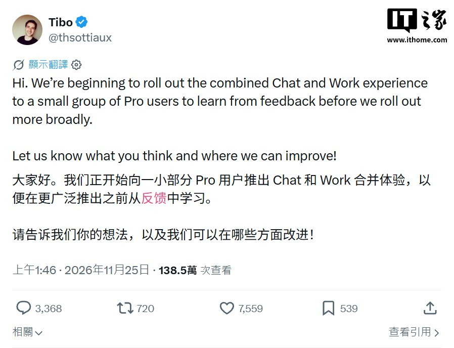

新闻 · 2026-11-26 12:00
OpenAI 开始合并 ChatGPT 聊天 / 工作模式，重度用户可能更早触及限额
OpenAI 正向部分 Pro 订阅用户推送 ChatGPT 聊天与工作模式合并功能，重度用户可能更早触及使用额度上限，但 Instant 模型对话不计入用量。该功能将于 12 月扩大覆盖范围。

来源与核验
单一信源报道，未交叉核实
OpenAI 正向部分 Pro 订阅用户推送 ChatGPT 聊天与工作模式合并功能，重度用户可能更早触及使用额度上限，但 Instant 模型对话不计入用量。该功能将于 12 月扩大覆盖范围。

单一信源报道，未交叉核实